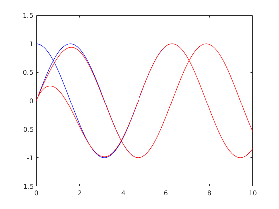
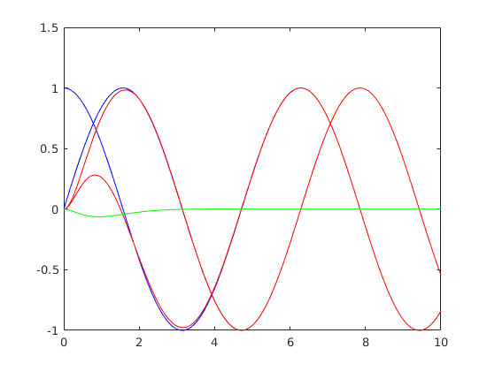
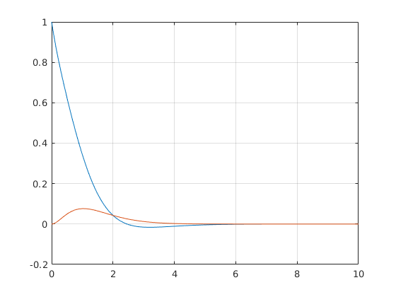
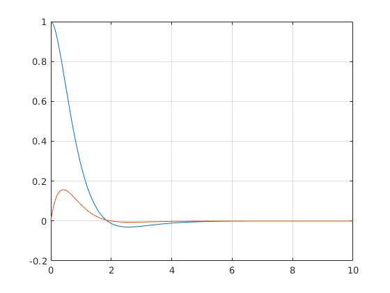

Contents
clc;
clear;
close all;
DEFINITION OF SYSTEM
m = 2;
n = 2;
v = m*n;
A = [0 -1; 1 0]
C1 = [1 0];
C2 = [0 1];
C = [C1' C2']';
E = [-1 1; 1 -1]
O = obsv(A,C);
if n == rank(O)
disp("System is Jointly Observable")
else
disp("System is not Jointly Observable")
end
GraphE = digraph(E);
s = conncomp(GraphE);
if s == ones(1,m)
disp("Graph is strongly connected")
else
disp("Graph is weakly connected")
end
A =
0 -1
1 0
E =
-1 1
1 -1
System is Jointly Observable
Graph is strongly connected
DEFINITION OF MATRICES FOR OBSERVERS
Abig = kron(eye(m),A);
Ebig = E';
Ebig = kron(Ebig, eye(n));
E1 = Ebig(1:n,:);
E2 = Ebig(n+1:v,:);
Bbig = kron(eye(n), eye(m));
B1 = Bbig(:,1:n);
B2 = Bbig(:,n+1:v);
poles = -1*ones(1,n);
Kgain = place(A',eye(n),poles);
K1 = Kgain(1,:)';
K2 = Kgain(2,:)';
F = 1*eye(n);
H = Abig -B1*K1*C1*B1' +B1*F*E1 -B2*K2*C2*B2' +B2*F*E2
disp('Eigenvalues of H:');
eig(H)
H =
-2 -1 1 0
0 -1 0 1
1 0 -1 0
0 1 1 -2
Eigenvalues of H:
ans =
-2.6939 + 0.4188i
-2.6939 - 0.4188i
-0.3061 + 0.4188i
-0.3061 - 0.4188i
DECENTRALIZED CONTROL
Obar = obsv(H,C2*B2');
Rbar = ctrb(H,B2);
if v == rank(Obar) && v == rank(Rbar)
disp("System (C2, H, B2) is Observable and Controllable")
else
disp("System (C2, H, B2) is nor Controllable neither Observable")
end
l = m-1;
g = C2*B2';
if charpoly(H) == minpoly(H)
disp('The minimal polynomial is equal to the characteristic polynomial')
end
Odyn = obsv(H,g);
if v == rank(Odyn)
disp("System (H, g) is Observable")
else
disp("System (H, g) is not Observable")
end
alpha = charpoly(H);
csys_dyn = ss(H,B2,C2*B2',zeros(1,2));
L = zeros(v+l,l+1);
for i= 1:(v+l)
if(i == 1)
L(i,1:n) = csys_dyn.C*csys_dyn.B;
else
for j = 1:i
if j == 1
L(i,1:n) = csys_dyn.C*(csys_dyn.A^(i-1))*csys_dyn.B;
else
L(i,1:n) = L(i,1:n) + alpha(j)*csys_dyn.C*(csys_dyn.A^(i-j))*csys_dyn.B;
end
end
end
end
phi = [1 alpha(2:v+1);
zeros(2,1) L(1:v,:)';
L(1:v+l,:)']';
rank(phi);
pole_matrix = -2*eye(v+l);
beta = charpoly(pole_matrix);
disp('Desired eigenvalues:');
disp(eig(pole_matrix));
gamma = beta(1,2:v+1) - alpha(1,2:v+1);
gamma = [gamma beta(1,6)];
X = linsolve(phi,gamma');
Bdyn = [csys_dyn.B zeros(v,l); zeros(l,n) eye(l)];
Cdyn = [csys_dyn.C zeros(1,l); zeros(l,v) eye(l)];
Kdyn = [-X(4) -X(2)+X(4)*X(1);
-X(5) -X(3)+X(5)*X(1);
1 -X(1)];
Ktr = Bdyn*Kdyn;
Abar = Kdyn(3,2);
Bbar = Kdyn(3,1);
Cbar = Ktr(1:4,2);
Dbar = Ktr(1:4,1);
Hdyn = [csys_dyn.A+Dbar*csys_dyn.C Cbar;
Bbar*csys_dyn.C Abar];
disp('New eigenvalues of Hdyn:');
disp(eig(Hdyn));
B_obs = [ K1' zeros(1,n+l); [zeros(1,n) K2']-Dbar' -Bbar]';
obs_dyn = ss(Hdyn,B_obs,eye(v+l),zeros(v+l,2));
System (C2, H, B2) is Observable and Controllable
The minimal polynomial is equal to the characteristic polynomial
System (H, g) is Observable
Desired eigenvalues:
-2
-2
-2
-2
-2
New eigenvalues of Hdyn:
-2.0016 + 0.0012i
-2.0016 - 0.0012i
-1.9994 + 0.0019i
-1.9994 - 0.0019i
-1.9980 + 0.0000i
SIMULATIONs
T = 10;
dt = 0.01;
t = 0:dt:T;
plant = ss(A,zeros(2,1),eye(2),zeros(2,1));
u = 1*t;
x0 = [1;0];
x = lsim(plant,u,t,x0);
y1 = C(1,:)*x';
y2 = C(2,:)*x';
y = C*x';
z = lsim(obs_dyn, y,t,zeros(5,1));
error1 = x - z(:,1:2);
error2 = x - z(:,3:4);
figure('Name','First Observer(red) and plant(blue)')
plot(t,x,'b')
hold on
plot(t,z(:,1:2), 'r')
figure('Name','Second Observer(red), plant(blue) and compensator dynamic(green)')
plot(t,x,'b')
hold on
plot(t,z(:,3:4), 'r')
plot(t,z(:,5), 'g')
figure('Name', 'Error of first observer')
plot(t, error1)
grid on
figure('Name', 'Error of second observer')
plot(t, error2)
grid on
   